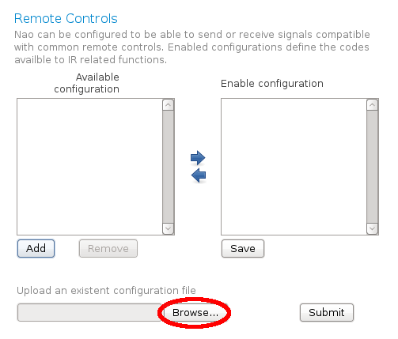
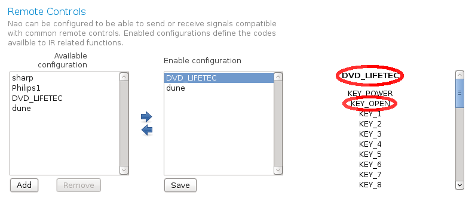

See also
In NAO web page > Settings > Remote Controls, are declared configuration files of the remote controls known by your robot.
To add a new configuration file from your computer,
The Browse button appears:
If for any reason you want to remove a file, click on Remove.
Note
At this step, configuration files of remote controls are available on the robot, but not enabled.
In NAO web page > Settings > Remote Controls, the second list box contains the configuration files of enabled remote controls.
To enable a remote control:
Warning
Do not enable too many remotes (5 max), or infrared recognition may become unreliable.
When you click on an available remote, its name is displayed on the right together with the available keys. These are the names you have to use in choregraphe for the boxes IR Send Key, IR Get Key, and in the bound methods described in the section: NAO as a remote control.
For example if you want to open the slot of your DVD player, select its remote name and KEY_OPEN.
